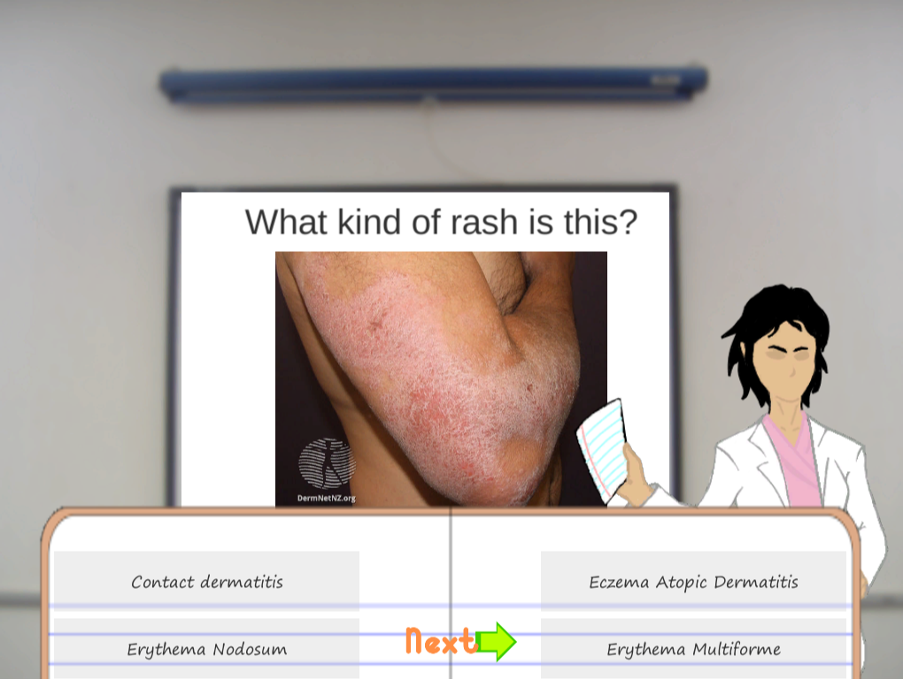
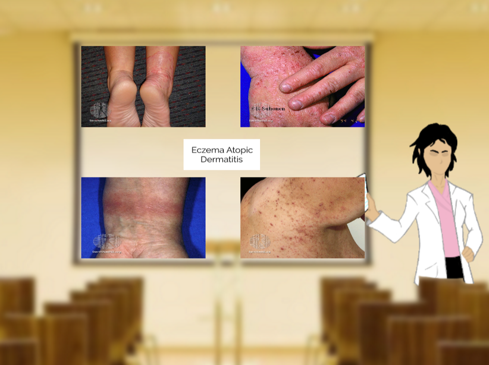
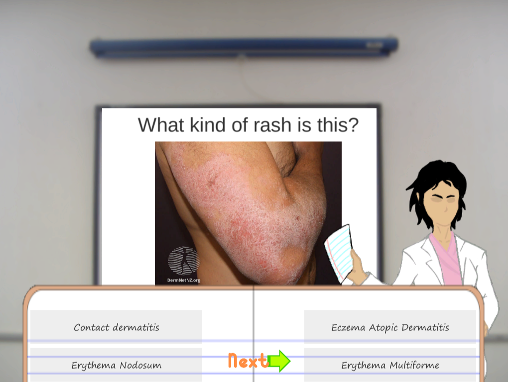
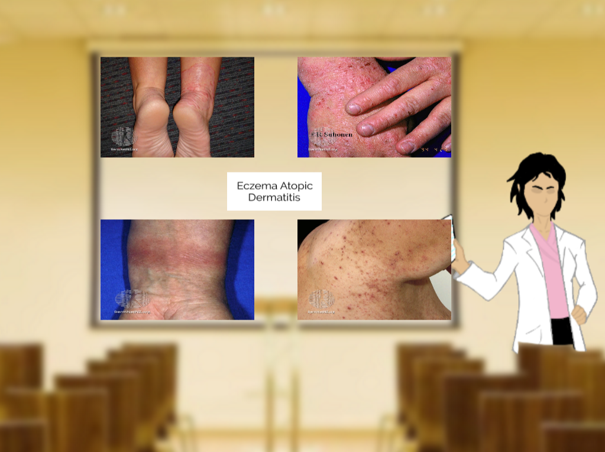

Son Nguyen, Christopher Humphrey, Matthew Piasecki
Symptom Selection
Itch.IO Trello GitHubMy first collaboration with the medical department. Symptom Selection is an educational puzzle simulator that takes place in the doctor's office. The role of the player is that of the doctor, whose goal is to successfully diagnose the patients that come in with different diseases. This game was made on Unity and under 90 hours. Symptom Selection isn't only for medical students, it's playable for everyone even they don't have any experience in the medical field. Since this is our first educational game, there are some issues that make the game is hard to approach, but I believe this is a foundation for any educational game that I'll make in the future.
- My Contributions:
 


